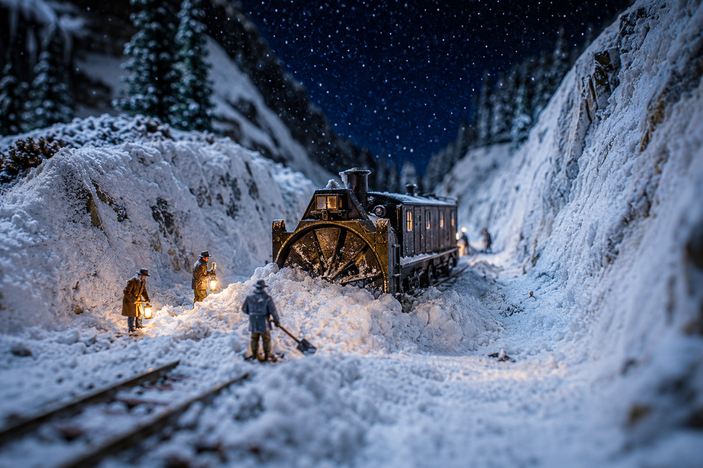

Three Days Apart: The Twin Railroad Avalanches of 1910

You'll have heard me tell of Wellington — of the two trains the mountain shrugged into the canyon on the first of March, 1910, and the ninety-six souls it kept. Folks like to call that the worst of it. They say it the way a man says a thing he wants to be true, because a single calamity is easier to carry than what really happened that week. The truth is the mountains weren't done. Three days after Wellington went quiet under the snow, two hundred miles north and across the line in British Columbia, the high country opened its hand a second time and took fifty-eight more.
It was the same storm, near enough. The same wet Pacific weather that had been piling the Cascades came up over the Selkirks and laid down snow by the foot, day on day, until the slopes above Rogers Pass were loaded heavier than any timber-crib or snowshed the Canadian Pacific had thought to build. And men were up there in it. They almost always were.
The Pass That Was Always Hungry
Now, Rogers Pass had a reputation long before that night, and it had earned every inch of it. Since the Canadian Pacific first threaded its line over the Selkirks in the eighties, the snow had been coming down on that track in slides that the railroad fought the only way it knew — with sheds and with shovels and with men. Two hundred Japanese laborers and Italians and whoever else would take the wage spent their winters in that pass clearing what the mountains dropped, and the mountains dropped a great deal. Some winters the snow fell deeper than a man stood tall, and then deeper than that.
They sent the living up the mountain to dig out the dead ground, and the mountain, not being finished, took the diggers too.
On the night of the fourth of March a slide came down across the line near the summit and buried the track under a great cold wall of it. That was the ordinary disaster — the kind the railroad expected and had men standing by to undo. So they did what they always did. A rotary plow came up to bite into the slide, and a crew of laborers came behind it with shovels to clear what the plow could not reach. They worked into the dark, the way crews do, with lanterns and the steam of the plow and the steam of their own breath.
And then the second slide came. It came off the opposite slope, down behind the men while their backs were to it and their faces to the first, and it caught the whole working party in the cut between two walls of snow. It buried the rotary plow. It buried the men around it. Fifty-eight of them never climbed back out of that pass.
The Names the Snow Kept
Here is the part the record handles poorly, and I'll not pretend otherwise. Most of the men who died in that cut were Japanese laborers, and the company kept their names the way it kept the names of all such men in those years — carelessly, or not at all. They had crossed an ocean to swing a shovel in a mountain pass for wages they sent home, and when the mountain took them, a good many went into the ledger as a number and nothing more. Wellington is remembered with a passenger list. Rogers Pass is remembered with an estimate.
That is the quiet cruelty of it, and it's worth saying plain even in a tale: the same week, the same storm, the same white death — but one set of dead got their names written down and the other set, by and large, did not.
What the Mountains Settled
The Canadian Pacific learned the lesson the hard way, as railroads do. After 1910 they stopped trying to out-shovel the Selkirks. They went under instead — boring the Connaught Tunnel through Mount Macdonald, five miles of it, opened in 1916, so the trains could pass beneath the avalanche country instead of through it. Later still they drove the Mount Macdonald Tunnel, longer yet. The pass that had eaten section crews for thirty years was finally answered the only way it could be answered: by going around the problem through the heart of the rock.
So when a man tells you Wellington was the worst railroad week the mountains ever made, you can tell him he's only half right. It wasn't one tragedy that first week of March. It was two, three days and a border apart, and together they make the deadliest seven days the high iron of this continent has ever known.
What Really Happened
The Rogers Pass avalanche struck the night of March 4, 1910, three days after the Wellington disaster of March 1. A crew was clearing an earlier slide near the summit of Rogers Pass when a second avalanche off the opposite slope buried them. The accepted death toll is 58 (some sources cite 62), making it the worst avalanche disaster in Canadian history.
The majority of the dead were Japanese railway laborers, many of whom were never individually identified in company records. In response, the CPR built the Connaught Tunnel (opened 1916) to bypass the avalanche-prone summit. The frontier dialect and the lantern-keeper framing above are storytelling; the dates, toll, and tunnel are drawn from the historical record.